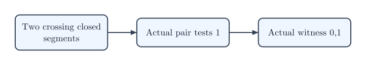
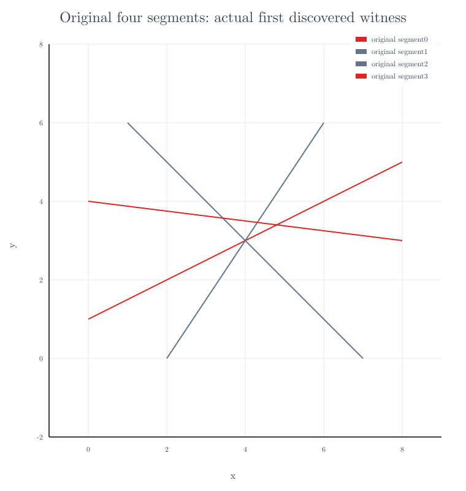
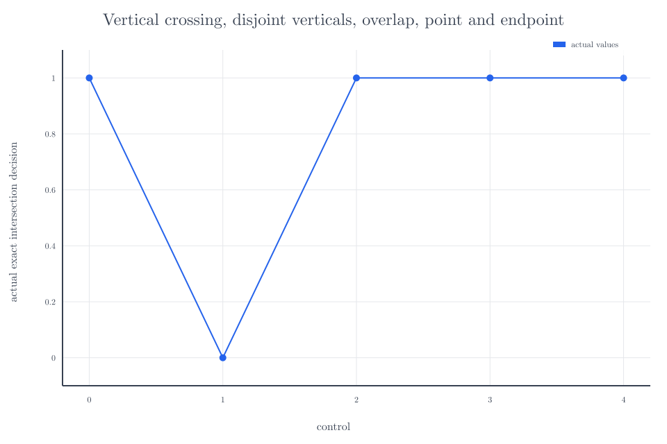
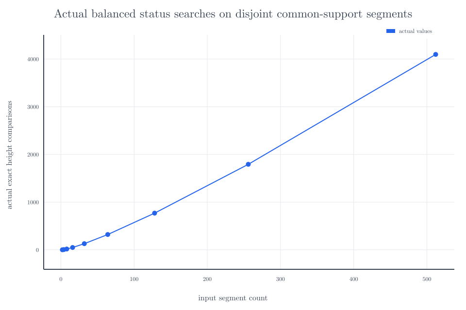

Shamos–Hoey detection: actual AVL events, exact neighbors and vertical contacts
Abstract
Given many closed finite segments, decide whether any distinct pair intersects and retain an original-identity witness. Actual native endpoint events and neighbor tests precede the original disjoint, crossing and four-segment examples.
Mechanism and mathematical scope
Before the first intersection, the vertical order of active nonvertical segments cannot exchange. A crossing pair must become neighbors before they cross; test newly adjacent pairs on insertion and removal. Sort endpoint events, maintain order in a balanced AVL tree and stop on the first witness. Each insertion height comparison uses the incoming endpoint and an exact orientation of the active segment, avoiding rounded division and a changing container comparator. Same-x starts precede vertical interval queries and ends. A vertical interval needs only the first active height at or above its lower endpoint; adjacent lower-y-sorted verticals handle vertical overlap. Sorting and balanced searches give O(n log n) bounded-word work and O(n) intrinsic storage; this detects one witness rather than enumerating all crossings.
A tiny actual producing history
The table and native concept diagram read the same producing execution. Every block below is a complete editable C++ program.
#include <dm/dm.hpp>
int main() {
namespace a = dm::algorithms;
namespace g = dm::graphics;
std::filesystem::create_directories("build");
namespace z = dm::geometry;
auto r = z::shamos_hoey_trace({{{0, 0}, {2, 2}}, {{0, 2}, {2, 0}}});
std::print("| actual tested first id | second id | exact contact |\n| ---: | ---: | --- |\n");
for (const auto &p : r.pairs)
std::print("| {} | {} | {} |\n", p.first, p.second, p.intersects);
std::print("\nActual events processed {}, height tests {}.\n",
r.events_processed, r.height_tests);
g::Diagram concept_diagram(48, 1100);
concept_diagram.node("n0", {0, 0}, "Two crossing closed segments");
concept_diagram.node("n1", {5, 0},
std::format("Actual pair tests {}", r.pair_tests));
concept_diagram.node("n2", {10, 0},
std::format("Actual witness {},{}", r.first, r.second));
concept_diagram.edge("n0", "n1").edge("n1", "n2");
concept_diagram.save_svg("build/shamos_hoey_tiny.svg");
}| actual tested first id | second id | exact contact |
|---|---|---|
| 0 | 1 | true |
Actual events processed 2, height tests 1.

The retained original experiment
#include <dm/dm.hpp>
int main() {
namespace a = dm::algorithms;
namespace g = dm::graphics;
std::filesystem::create_directories("build");
namespace z = dm::geometry;
const std::vector<std::pair<z::Point2D, z::Point2D>> disjoint{
{{0, 0}, {5, 0}}, {{0, 2}, {5, 2}}, {{0, 4}, {5, 4}}
}, crossing{{{0, 0}, {6, 6}}, {{0, 6}, {6, 0}}, {{1, 5}, {5, 1}}}, original{
{{0, 1}, {8, 5}}, {{1, 6}, {7, 0}}, {{2, 0}, {6, 6}}, {{0, 4}, {8, 3}}
};
std::print("Original disjoint decision {}; crossing decision {}.\n",
z::any_segments_intersect(disjoint),
z::any_segments_intersect(crossing));
auto r = z::shamos_hoey_trace(original);
std::print("Original four-segment actual witness {},{}.\n\n| actual event x | kind (0 start,1 " "vertical,2 end) | original id | actual active after | AVL height after |\n| ---: | ---: | " "---: | ---: | ---: |\n",
r.first, r.second);
for (const auto &e : r.events)
std::print("| {} | {} | {} | {} | {} |\n", e.x, int(e.kind), e.segment,
e.active_after, e.tree_height_after);
auto plot = g::RPlot::create();
for (std::size_t i = 0; i < original.size(); ++i) {
auto[p, q] = original[i];
plot.lines({p.x, q.x}, {p.y, q.y}, std::format("original segment{}", i),
i == r.first || i == r.second ? g::RGB{220, 38, 38}
: g::RGB{100, 116, 139});
}
plot.size(760, 800).margins(80, 40, 72, 88).x_limits(-1, 9).y_limits(
-2, 8).title("Original four segments: actual first discovered witness").x_label("x").y_label("y");
plot.save_svg("build/shamos_hoey_original.svg");
}Original disjoint decision false; crossing decision true. Original four-segment actual witness 0,3.
| actual event x | kind (0 start,1 vertical,2 end) | original id | actual active after | AVL height after |
|---|---|---|---|---|
| 0 | 0 | 0 | 1 | 1 |
| 0 | 0 | 3 | 2 | 2 |

Explicit controls
#include <dm/dm.hpp>
int main() {
namespace a = dm::algorithms;
namespace g = dm::graphics;
std::filesystem::create_directories("build");
namespace z = dm::geometry;
const std::vector<std::vector<std::pair<z::Point2D, z::Point2D>> > cases{
{{{2, 0}, {2, 4}}, {{0, 2}, {4, 2}}},
{{{2, 0}, {2, 1}}, {{2, 2}, {2, 3}}},
{{{2, 0}, {2, 4}}, {{2, 3}, {2, 5}}},
{{{1, 1}, {1, 1}}, {{0, 1}, {2, 1}}},
{{{0, 0}, {1, 1}}, {{1, 1}, {2, 0}}}
};
std::vector<double> x, y;
std::print("| degeneracy control | actual found | actual pair tests | actual height tests |\n| ---: | " "--- | ---: | ---: |\n");
for (std::size_t i = 0; i < cases.size(); ++i) {
auto r = z::shamos_hoey_trace(cases[i]);
std::print("| {} | {} | {} | {} |\n", i, r.found, r.pair_tests,
r.height_tests);
x.push_back(i);
y.push_back(r.found);
}
auto plot = g::RPlot::create();
plot.lines(x, y, "actual values", {37, 99, 235}).points(x, y, {37, 99, 235},
5).title(
"Vertical crossing, disjoint verticals, overlap, point and endpoint").x_label("control").y_label("actual exact intersection decision");
plot.save_svg("build/shamos_hoey_controls.svg");
}| degeneracy control | actual found | actual pair tests | actual height tests |
|---|---|---|---|
| 0 | true | 1 | 1 |
| 1 | false | 1 | 0 |
| 2 | true | 1 | 0 |
| 3 | true | 1 | 1 |
| 4 | true | 1 | 1 |

Actual selected work and sensitivity
#include <dm/dm.hpp>
int main() {
namespace a = dm::algorithms;
namespace g = dm::graphics;
std::filesystem::create_directories("build");
namespace z = dm::geometry;
std::vector<double> x, y;
std::print("| controlled horizontal segments | actual events | actual height tests | actual pair tests " "| actual AVL rotations |\n| ---: | ---: | ---: | ---: | ---: |\n");
for (std::size_t n : {2, 4, 8, 16, 32, 64, 128, 256, 512}) {
auto r = z::shamos_hoey_run(z::shamos_horizontal_segments(n));
std::print("| {} | {} | {} | {} | {} |\n", n, r.events_processed,
r.height_tests, r.pair_tests, r.rotations);
x.push_back(n);
y.push_back(r.height_tests);
}
auto plot = g::RPlot::create();
plot.lines(x, y, "actual values", {37, 99, 235}).points(x, y, {37, 99, 235},
5).title(
"Actual balanced status searches on disjoint common-support segments").x_label("input segment count").y_label("actual exact height comparisons");
plot.save_svg("build/shamos_hoey_work.svg");
}| controlled horizontal segments | actual events | actual height tests | actual pair tests | actual AVL rotations |
|---|---|---|---|---|
| 2 | 4 | 1 | 1 | 0 |
| 4 | 8 | 5 | 3 | 2 |
| 8 | 16 | 17 | 7 | 6 |
| 16 | 32 | 49 | 15 | 16 |
| 32 | 64 | 129 | 31 | 38 |
| 64 | 128 | 321 | 63 | 84 |
| 128 | 256 | 769 | 127 | 178 |
| 256 | 512 | 1793 | 255 | 368 |
| 512 | 1024 | 4097 | 511 | 750 |

API and interpretation
Each witness names original caller segment identities. Complete pair predicates use exact stored-coordinate signs and never construct rounded crossing coordinates. Equal-x event phases include endpoint contacts; vertical segments stay outside the nonvertical status. Selected counters exclude event-sort comparisons and internals of the fixed exact determinant kernel. Optional histories have independent actual-record caps.
Reusable producers, fixtures and histories live in the canonical C++ library. Captured records own their values and do not come from a separate report replay. Selected counters and record/scalar policies are specified at their API boundaries; they are not peak-byte or wall-time budgets. Synthetic structural inputs are controlled fixtures for these mechanisms.
References
Verification: 126 scoped native cases;21 directly instrumented ASan/UBSan
cases;124 executable public examples;492/492 full-file definitions and10 exact
Sfc64 members;10 hovers;1588 independent records/14377 checks;frozen comparisons
across all ten families with endpoint/full-width field corrections recorded;17
checkout/installed standalone headers and linked/umbrella consumers;40 executed
programs and40 inspected figures with both exports. The complete
original4000-step native tensor SOM trajectory agrees with an independent NumPy
replay, including every winner and final assignment. Receipts:
build/mepml-conversion/batch-344-353/.